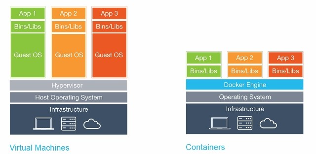
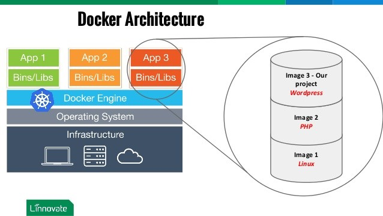
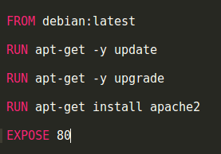
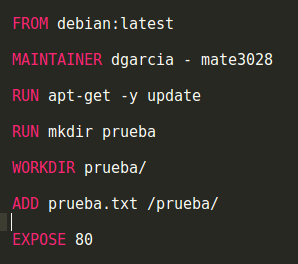

Docker es un entorno virtual basado en los contenedores de Linux LXC, los cuales crean su propio espacio de procesos y nombres a través de la virtualización a nivel de software. Esta técnica permite que los contenedores aíslen sus procesos y recursos de una manera más simple y eficiente que una máquina virtual, y tiene como objetivo principal la instalación de un sistema operativo estándar sobre el cual correrán los diferentes contenedores y sus aplicaciones de forma independiente, pero compartiendo el mismo kernel del host base. A nivel de funcionalidad, Docker contiene una pieza de software en un archivo del sistema que contiene todo lo necesario para la ejecución del código, tiempo de ejecución, herramientas del sistema, librerías y todo lo que se pueda instalar tanto para la aplicación y el servidor; lo cual garantiza que el software siempre se ejecutará de la misma manera sin importar el entorno en el cual se encuentre en ejecución. En comparación con una máquina virtual, Docker comparte el mismo enfoque de aislamiento de procesos, pero se orienta arquitectónicamente de una forma distinta que permite a los contenedores ser más portables y eficientes.

La arquitectura docker se basa en la virtualización de un sistema operativo el cual actuará como un host, sobre el cual se instalará el motor base de docker. Docker permitirá la instalación de diferentes contenedores con sus librerías y archivos binarios para la ejecución de las imágenes que contendrán las distintas aplicaciones a desplegar.

Para la creación de una imagen docker se utiliza un archivo llamado Dockerfile el cual es un documento de texto que contiene todas las instrucciones y líneas de comando de la instalación de los paquetes. La estructura básica de este archivo es la siguiente:

Los comandos más utilizados en la configuración del archivo Dockerfile son los siguientes:
